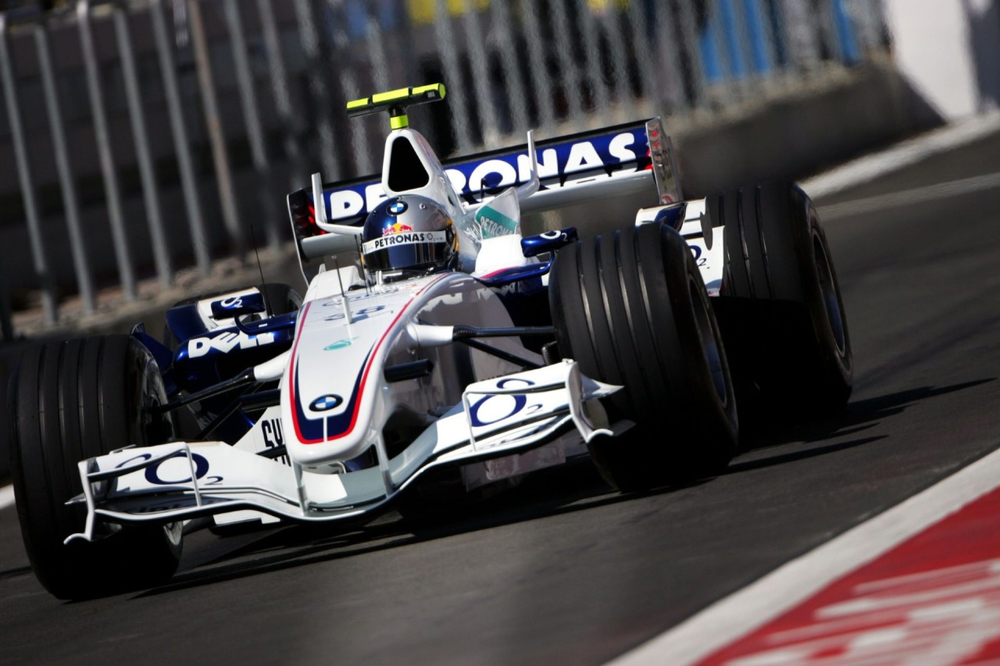

Sebastian Vettel
share
The youngest ever world champion's accumulation of age-related records that began in 2010 continued for four consecutive seasons,
culminating in a one-sided 2013 title triumph that confirmed his status as one of the sport’s all-time greats.
Sebastian Vettel’s first championship, at the age of 23, provided a surprise ending to an intensely competitive 2010 campaign.
There was surely more to come from this fast rising racer,
and it came quickly when he completely dominated in 2011 to become the youngest double world champion.
In 2012, with a series of comebacks from setbacks against the strongest opposition in the longest ever season,
his third driving title in a row was hard-earned and well-deserved.
In 2013, and still just 26 years old, he made short work of becoming the youngest ever quadruple world champion.
In truth the precocious youngster who came so far so fast was in a hurry from the time he was a toddler...
Just three years and half years after he was born, on July 3, 1987,
Sebastian Vettel began the way of life that would take him to the very pinnacle of motorsport.
His method of transport was a miniature kart, the venue was the yard at his home in Heppenheim, a town in south-western Germany.
Little Sebastian quickly mastered the machine and began lapping faster and faster, shrieking with glee and refusing to stop until he was exhausted.
The source of little Seb's joy soon became a focal point of family life for the Vettels.
Norbert, a carpenter by trade and in his spare time an enthusiastic karter and occasional hillclimber,
and his wife Heike had three other children: older daughters Stefanie and Melanie, and a younger son Fabian.
His family's support helped the would-be racer fulfil a destiny that would make the Vettel name a household word around the world.
He made his kart racing debut at the age of seven and immediately began winning races and championships.
One of his early trophies was presented by his idol Michael Schumacher, who befriended the awestruck boy,
noting their similar backgrounds and encouraging him to follow his passion and reach for the top.
But that would take more money than the Vettels could afford.
The solution came in the form of sponsorship from Red Bull,
whose talent-spotters decided Sebastian was worthy of inclusion in the energy drink maker's young driver training programme.
-
1/6
Sebastian Vettel (GER), KSN Team. ICA Junior European Championschip, St Amand, France. 15 July 2001. Sutton Images
-
2/6
L-R, Christopher Wassermann (AUT) and Sebastian Vettel (GER) Red Bull Junior sponsored drivers, BMW ADAC Championship. Formula BMW ADAC Championship Testing. 21 February 2003. Adria International Speedway Circuit, Italy. © Sutton Images
-
3/6
Sebastian Vettel (GER) tests a Williams BMW FW27. Formula One Testing, Day One, Jerez, Spain, Tuesday 27 September 2005. © Sutton Images
-

4/6
Sebastian Vettel (GER) BMW Sauber Third Driver. Formula One World Championship, Rd 14, Turkish Grand Prix, Practice Day, Istanbul Park, Turkey, 25 August 2006. © Sutton Images
-
5/6
Sebastian Vettel (GER) Scuderia Toro Rosso STR02. Australian Grand Prix, Rd 1, Qualifying Day, Albert Park, Melbourne, Australia, Saturday 15 March 2008. © Sutton Images
-
6/6
Pole position man Sebastian Vettel (GER) Scuderia Toro Rosso in parc ferme. Formula One World Championship, Rd 14, Italian Grand Prix, Qualifying Day, Monza, Italy, Saturday 13 September 2008. © Sutton Image
Learning and improving all the time, he graduated with flying colours into single-seaters.
As a 17-year-old schoolboy he won an unprecedented 18 of 20 races to dominate the German Formula BMW championship.
At 18 he distinguished himself testing a BMW Williams F1 car. At 19 he became a test driver for the BMW Sauber F1 team, underlining his commitment to the cause by moving to a village near the Swiss-based team's headquarters.
His Formula One race debut came in the 2007 US Grand Prix at Indianapolis.
There, deputising for the injured Robert Kubica, he qualified seventh and finished eighth, becoming the youngest driver to score a championship point.
In mid-summer the teenager became a full-time driver with the Red Bull-sponsored Toro Rosso team, where at first it seemed he had come too far too fast. In the wet Japanese Grand Prix,
when they were running second and third behind the safety car, he needlessly collided with Red Bull's Mark Webber,
putting them both out of the race. Impetuous yes, but also resilient. A week later, in China, Vettel climbed from 17th on the grid to finish fourth.
A full 2008 season with Toro Rosso included some uneven performances that were then overshadowed by a remarkable first ever victory for both Vettel and the smallest team on the grid.
In Italy, on a superfast Monza track made treacherous by rain,
the youngest ever polesitter made yet more history when he ran away with the race to become the youngest ever Grand Prix winner.
By now Formula One fans were getting to know the boy racer and they liked what they saw.
He was cheerful and funny and radiated an infectious enthusiasm.
His sunny disposition was a reflection of the pure pleasure he got from his profession.
'Drive My Car' by The Beatles was his favourite song.
He loved off-beat British humour, notably Monty Python, Mr Bean and Little Britain.
He admitted he was afraid of mice, but nothing about Formula One racing worried him.
Beneath the happy-go-lucky demeanour was fierce ambition and profound self-belief in his ability to win the championship sooner than later.
In 2009 he was promoted to Red Bull Racing where he was teamed with the veteran Webber,
a decade older and presumably wiser than the newcomer, though not faster as it turned out.
Vettel's victory in the third race of season, in China, was Red Bull's first Formula One win.
He dominated the last half of the season, winning three more races and finishing second to Jenson Button in the championship.
The longest ever season in 2010 was also one of the most closely contested.
Ferrari, McLaren and Red Bull had the best cars and their drivers won all 19 races.
Though former champions Alonso, Button and Hamilton, together with Webber, took turns leading the championship, Sebastian Vettel's frontrunning pace - he started from pole 10 times - kept him in the title hunt.
While their team's policy of letting them fight it out on the track led to a strained relationship between Vettel and Webber, their combined results enabled Red Bull Racing to clinch a first constructors' championship at the penultimate race, in Brazil, where Vettel led from start to finish.
-
1/7
Race winner Sebastian Vettel (GER) Scuderia Toro Rosso on the podium. Formula One World Championship, Rd 14, Italian Grand Prix, Race, Monza, Italy, Sunday 14 September 2008. © Sutton Images
-
2/7
Race winner Sebastian Vettel (GER) Red Bull Racing RB5 takes the flag. Formula One World Championship, Rd 8, British Grand Prix, Race, Silverstone, England, Sunday 21 June 2009. © Sutton Images
-
3/7
Fernando Alonso (ESP) Renault R29 and Sebastian Vettel (GER) Red Bull Racing RB5 battle at the start of the race. Formula One World Championship, Rd 14, Singapore Grand Prix, Race, Marina Bay Street Circuit, Singapore, Sunday 27 September 2009. © Sutton Images
-
4/7
Race winner Sebastian Vettel (GER) Red Bull Racing RB6 Formula One World Championship, Rd 3, Malaysian Grand Prix, Race, Sepang, Malaysia, Sunday 4 April 2010. © Sutton Images
-
5/7
Sebastian Vettel (GER) Red Bull Racing celebrates his third position on the podium. Formula One World Championship, Rd 12, Hungarian Grand Prix, Race, Budapest, Hungary, Sunday 1 August 2010. © Sutton Images
-
6/7
Sebastian Vettel (GER) Red Bull Racing RB6 crosses the line to win the race. Formula One World Championship, Rd 19, Abu Dhabi Grand Prix, Race, Yas Marina Circuit, Abu Dhabi, UAE, Sunday 14 November 2010. © Sutton Images
-
7/7
Sebastian Vettel (GER) Red Bull Racing RB7. Formula One World Championship, Rd 7, Canadian Grand Prix, Race, Montreal, Canada, Sunday 12 June 2011. © Sutton Images
In the grand finale at Abu Dhabi Vettel earned his fifth victory of the season with another flawless drive from pole.
None of his rivals scored enough points to deprive Sebastian Vettel of the title he fully deserved.
The 2010 world champion, aged 23 years and 133 days, was the youngest in the 61-year history of the sport.
His 2011 title defence amounted to a season-long victory parade in which he seemed to keep winning for fun - beating all comers on all types of circuits and clinching his second consecutive championship with four races to go.
Granted, the Red Bull Racing RB7 was the class of the field (and the team repeated as constructors' champion),
but it was his commanding personal performance - 11 wins,
six other podiums and a record 15 poles in 19 races - that made 24-year-old Sebastian Vettel the youngest double world champion.
In 2012 Vettel triumphed over both adversity and formidable opposition that included five other champions: Alonso, Hamilton, Button, Raikkonen and Schumacher.
In the 20-race season (the longest ever) made unpredictable by regulation changes,
there were eight different winners from six teams.
By mid-season Ferrari's hard-driving veteran Alonso (also pursuing a third drivers' title) had three victories (Vettel had one) and a substantial lead in the standings.
Thereafter, taking full advantage of his steadily improving RB8 car, Vettel surged back into contention, scoring four race wins in a row plus three other podiums to lead the title race and help Red Bull Racing clinch its third successive team championship.
But the title bout between Vettel and Alonso was far from over and for the 27th time in history the championship was decided at the last race - this time in a Brazilian Grand Prix made chaotic by rain.
Several times during the thrilling showdown the slippery pendulum of fate swung in favour of Alonso,
who qualified seventh and eventually finished second.
Vettel started fourth but his championship chances nosedived in the mayhem of a frantic first lap in which his RB8 was hit hard,
sustaining permanent chassis damage and dropping to last place. Vettel responded to his misfortune with a masterful drive in an ailing car,
finally emerging from the mist and spray to finish sixth and beat Alonso to the title by 3 points.
Sebastian Vettel proved he had come of age.
The youngest triple champion’s three driving titles ranked him equal with such illustrious names as Brabham, Stewart, Lauda, Piquet and Senna.
As a student of the sport’s history he was honoured to be in such company,
though he remained humble about his achievements.
As an essentially private person he steered clear of the celebrity culture in which he could easily have been the superstar he was fast becoming in his profession.
“Overwhelmed” was the word Vettel used to sum up his feelings on the victory podium at the 2013 Indian Grand Prix where he clinched his fourth consecutive championship by virtue of overwhelming the opposition.
The champion’s feat came with his 10th victory (and his sixth in a row) in the 16th round of the 19-race season.
As ever, ‘Seb’ profusely thanked his all-conquering Red Bull Racing team (which he led to a fourth consecutive constructors’ championship), paying particular tribute to the RB9’s brilliant designer Adrian Newey.
Newey noted the young champion had matured into a nearly flawless driver and a peerless team leader.
All Vettel’s rivals praised him, including his team mate Mark Webber whom he had beaten in Malaysia despite team orders to let Webber win.
Immediately following the post-race ceremonies the record-setting champion pitched in to help his team pack up the equipment for shipment to the next race.
He went on to win the remaining three races of 2013, thus equalling Ascari’s 60-year-old record of nine consecutive victories.
Vettel’s fourth driving title (which equalled Prost’s record) in as many years placed him in the select company of the two most successful champions Fangio and Schumacher,
whose four-in-a-row achievements came when they were aged 45 and 32, respectively.
Sebastian Vettel did it when he was 26 years and 123 days old,
giving him plenty of time to further rewrite the record books in which his name is already indelibly described.
All good things must come to an end, however,
though seldom has a dominant driver’s form dropped off so abruptly.
In 2014 Sebastian Vettel failed to win a race and finished a dispirited fifth in the standings.
Meanwhile his new Red Bull Racing team mate Daniel Ricciardo won three races,
finished a superb third overall and led their team to become best of the rest behind Mercedes.
Vettel’s lacklustre results,
attributed to problems adapting his driving style to the demands of the new technical regulations,
threatened to diminish the four-time champion’s exceptional achievements.
However, among those who believed in the fallen star’s personal theory that a drastic change of environment would hasten a return to his winning ways was Ferrari,
a team in dire need of a new leader to inspire a recovery of lost form.
For 2015 Sebastian Vettel replaced the departing Fernando Alonso at the Scuderia.
The new relationship worked wonders,
with Vettel’s inspirational leadership providing the impetus for a dramatic resurgence that resurrected the reputations of both the famous Italian team and its genial German driver.
Demonstrating an impressive work ethic (worthy of Michael Schumacher) and a cheerful demeanour that uplifted morale, Vettel drove Ferrari onward and upward.
In a 2015 season otherwise dominated by Mercedes,
Sebastian Vettel’s three race wins (among ten podium finishes) earned him third place among the drivers and led Ferrari to second place in the team standings.
In 2016 Vettel’s failure to add to his tally of four championships and 42 victories left him frustrated,
floundering and often furious.
He did score seven podiums and finished fourth in the standings but his season featured inconsistent performances
- from the driver, his car and his team.
Vettel made driving mistakes,
there were car failures, strategy blunders and arguments that led to inner turmoil at Ferrari.
In 2017 Sebastian Vettel was more of a force to be reckoned with.
Winning five races and failing to score only twice, the four-time champion finished second overall to Lewis Hamilton.
A resurgence by his Ferrari team saw him lead the standings in the early part of the season.
Thereafter, the effort of intense mechanical upgrading to match Mercedes contributed to uneven performances by the Italian team and its German driver.
In a 2018 season in which his Ferrari was often the better car,
Sebastian Vettel again finished a troubled second best to his Mercedes rival Lewis Hamilton.
Vettel’s strong start – he won the first two races,
and led the standings until mid-season – flattered to deceive.
There followed an all too familiar pattern of erratic performances by both driver and team,
a loss of equilibrium in response to ever-increasing pressure from the ever-improving Hamilton-led Mercedes challenge.
In the end, mindset mattered more than machinery at Ferrari.
Vettel crashed out of the lead in Germany,
his home race, spun out of contention after unnecessary contact on several occasions,
notably in Italy, Ferrari’s home race.
The sudden death of Ferrari chairman Sergio Marchionne had an adverse effect.
The race team also made mistakes in judgement and strategy,
lost ground in car development.
Blunders multiplied, confidence deteriorated, panic set in, morale slumped.
Despite this being Ferrari's best year statistically in a decade,
Vettel's five wins, only one of them after the summer break,
fell far short of expectations and he readily accepted his share of the blame.
"Looking back, I was not at the top of my game.
It has been a quite difficult and exhausting year for me and the team.
I don't think I need to change things upside down. But certainly I need to adjust and get stronger."
But his fifth Ferrari season was to prove even more challenging for the four-time champion,
whose personal shortcomings that relegated him to fifth in the championship were overshadowed by the sensational debut of his talented and self-assured 22-year-old rookie team mate Charles Leclerc,
who scored 10 podiums including two wins,
set a record seven pole positions and finished fourth overall,
24 points ahead of the 32-year-old Vettel.
Vettel’s inferior results – eight podium appearances including a single win and two pole positions – seemed to provoke elements of desperation in his driving.
There were unforced errors and instances of red mist (a feeling of extreme anger that clouds one’s judgement temporarily),
notably in Brazil where a clumsy coming-together between the rival team mates put both scarlet cars out of the race.
It didn’t help that the famous Red Team,
which on occasion had the fastest car,
at times seemed somewhat below par operationally, making strategic decisions that undermined Ferrari’s performance potential.
To his credit Sebastian Vettel again shouldered his portion of responsibility.
“I have been around long enough and I’m honest enough to admit that I should have done a better job.”
In 2020 the 33-year-old German found his Ferrari SF1000 – which he nicknamed Lucilla – far less to his liking than did his ambitious, young Monegasque team mate Charles Leclerc,
whose superior results and optimistic attitude led to him usurping Vettel’s role as Ferrari’s team leader.
This harsh truth came near the start of season when the team advised Vettel his contract would not be renewed for 2021,
when he would be replaced by rising Spanish star, 26-year-old Carlos Sainz (from McLaren).
His fall from grace after six seasons with the famous Italian team undoubtedly hurt the forsaken Vettel’s pride.
He became dispirited and there was evidence of desperation in his driving.
Feelings of rejection, humiliation, frustration left him in a state of emotional turmoil that was not conducive to performing well at the pinnacle of motorsport.
It was little consolation that winless Ferrari endured their worst season in decades,
finishing sixth in the team standings,
while Vettel’s 13th place among the drivers was five places lower than his team mate Leclerc.
Though his self-belief surely suffered,
there were still some firm believers in the four-time champion’s ability to recover lost lustre.
A substantial lifeline soon came his way in the form of a long-term contract beginning in 2021 with the newly-rebranded Aston Martin F1 Team (formerly Racing Point).
This refinanced and highly ambitious squad,
led by a presumably rejuvenated marquee driver might well show impressive upward mobility.
Sebastian Vettel thinks so: “It’s a new adventure for me with a truly legendary car company.
I have been impressed with the results this team has achieved so far,
and I believe the future looks even brighter.”
Text - Gerald Donaldson